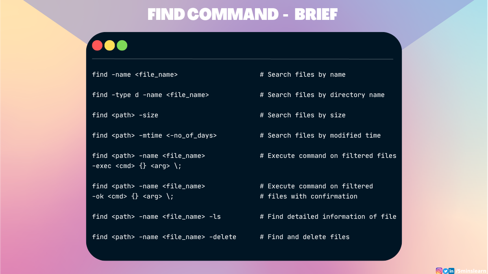
本文将帮助您了解 Linux 中最常用的 find 命令的基础知识。
find 命令用于搜索计算机上的文件和目录。它可以使你灵活的在特定目录中搜索文件或递归搜索所有子目录。
让我们探索 find 命令的强大功能
假设您在某处保存了一个名为 hello_world.html 的文件，但您不记得目录名称了。但是您的老板要求您立即将文件发送给他。
通常，如果您忘记了文件的存储位置，您首先会逐个浏览文件夹并检查文件是否存在。
这时就是 find 命令发挥作用的时候。您可以使用 find 命令自动执行该过程，而不是在您的计算机上手动搜索文件。
通过使用 -name 标志传递文件名，find 命令搜索并返回文件的位置。
find -name <file_name>find 命令语法以按名称搜索文件
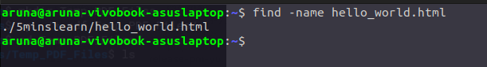
但请记住 -name 标志执行区分大小写的搜索。如果您希望不区分大小写，则可以改用 -iname 标志。
find -iname <file_name>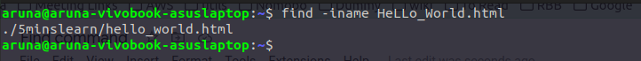
在某些地方，您还可以使用 find 命令替代 ls 命令。假设您需要查找所有以 .txt 扩展名结尾的文件。您可以通过使用正则表达式模式 (*.txt) 的 find 命令来执行此操作。
find /path/to/search -name "*.txt"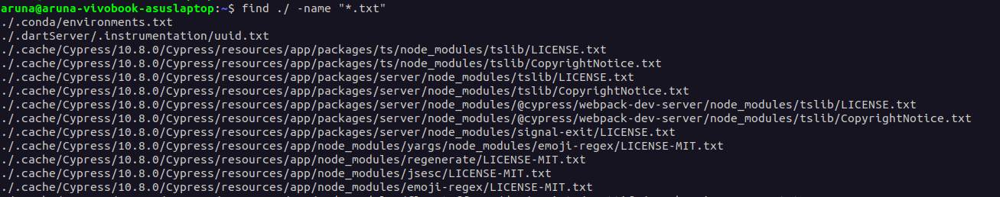
此命令将列出当前目录及其子目录中的所有 .txt 后缀的文件。
要在特定目录和子目录中查找 .txt 文件，您可以将 /path/to/search 替换为您的目录路径。
通过将d 传递给 find 命令中的 -type 参数，可以搜索目录。
find /path/to/search -type d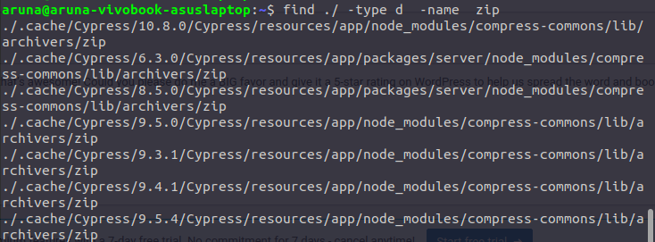
在上面的屏幕截图中，我们从当前目录中找到一个名为 zip 的目录。
同样，-type 选项接受其他参数选项以简化我们的查找过程。
b - 块设备文件。d - 目录。c - 字符设备文件。p - 管道文件。l- 符号链接文件。f - 普通文件。s - socket文件将 -size 选项与 find 命令一起添加可帮助您根据大小查找文件。在大小前加上 + 或 - 分别表示大于和小于。
find /path/to/search -size <size_of_the_file>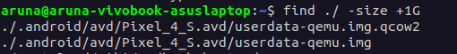
在上面的屏幕截图中，我们找到了所有大小大于 1 GB 的文件。
您还可以搜索特定大小范围内的所有文件。
例如，如果要查找所有大于 50 MB 且小于 100 MB 的文件，可以运行以下命令：
find /path/to/search -size +50M -size -100M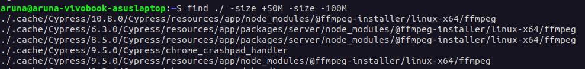
您可以用您喜欢的符号指定大小。一些可用的符号是：
b: 代表 512 位元组的区块（如果用户没有指定后缀，则默认为 b）c: 表示字节数k: 表示 kilo bytes （1024字节）w: 字 （2字节）M:兆字节（1048576字节）G: 千兆字节 （1073741824字节）每个文件都有与之关联的创建时间和上次更新时间。假设您的目录中有数千个文件。您在过去几天编辑了一个文件，但忘记了它的名字。您确定在那之后您只编辑了很少的个文件。
在这种情况下，您可以找到过去 7 天内修改过的所有文件。这会将您的搜索从 1000 多个文件限制到更易于管理的数量。运行该命令后，您将能够在几秒钟内找到您编辑的文件。
这可以通过使用 find 命令传递 -mtime 参数来实现。
find /path/to/search -mtime <-number_of_days_ago>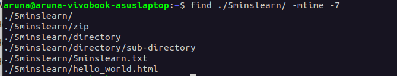
假设另外一个场景，今天是2023年2月10日，你在2023年2月3日之前修改了一个文件，2023年2月3日之后修改了很多文件。您必须找到您在 2023 年 2 月 3 日之前修改的文件。
您也可以使用 find 命令运行此查询。您可以通过将负号 (-) 与正号 (+) 交换来实现此目的。
这是为您修改的命令：
# 搜索在特定日期之前修改的文件
find /path/to/search -mtime +7find 命令过滤的文件执行命令这个问题可能会让你感到困惑。在揭晓答案之前，我们先用一个真实的场景来理解这个问题。
假设您在一个目录中有 1000 个文件，运行 find 命令会返回 20 个匹配的文件。您想要将这 20 个文件移动到不同的目录中。你怎么能做到这一点？
简而言之，我们必须对每个过滤后的文件运行一个命令。
您可以通过将-exec 选项与 find 命令一起传递来执行此操作。
-exec 选项对在搜索中找到的每个文件执行命令。 -exec 选项后跟命令及其参数，{}符号表示被处理的文件的路径。
为了表示 -exec 命令的结束，我们必须添加 \; （一个反斜杠和一个分号）。
语法如下：
find /path/to/search -name -exec {} \;让我们尝试将过滤后的文件从 5minslearn 目录移动到 zip 目录。
这是命令：
find ./5minslearn -name "*.zip" -exec mv {} ./5minslearn/zip \;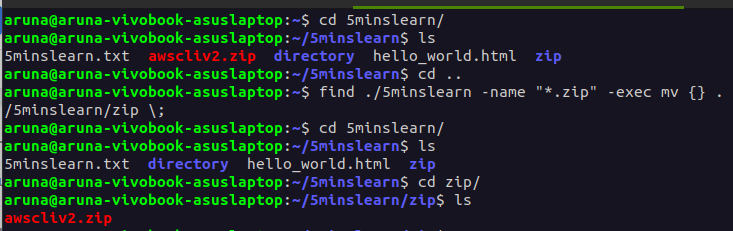
此命令在./5minslearn 目录中搜索所有以 .zip 结尾的文件，然后将每个文件移动到 ./5minslearn/zip 目录。
-exec 选项允许您对找到的文件执行范围广泛的操作。您可以通过复制、删除甚至更改文件权限命令来替换上述示例中的移动命令。
如果不确定是否对每个文件应用该操作，大多数人会更愿意使用-ok。
-ok选项类似于-exec 选项，只是它会在对每个文件执行操作之前要求确认。此命令对于在执行特定操作之前查看将受影响的文件非常有帮助。如果您不确定或不想应用该命令，您也可以选择拒绝。
例如，这次让我们尝试将 .txt文件移动到其他目录。
find /path/to/search -name "*.txt" -ok mv {} /path/to/destination \;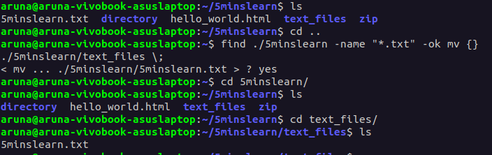
上述命令在 ./5minslearn目录中搜索所有扩展名为.txt 的文件，然后在将每个文件移动到 ./5minslearn/text_files 目录之前提示用户确认。
要批准操作，输入 "yes"，"no "则拒绝操作并跳到下一个文件。
当您想对正在修改的文件保持谨慎时，-ok 选项很有用，因为它允许您在执行指定命令之前检查每个文件及其位置。
find 命令中的 -ls 选项用于以ls 命令的格式显示有关搜索到的文件的信息。此选项提供有关文件的详细信息，例如它们的权限、所有者、大小和上次修改时间。
find /path/to/search -name "*.<file-extension>" -ls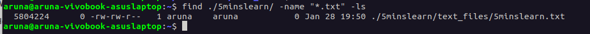
您是否曾经需要查找文件并将其从计算机中删除？ find 命令中的 -delete 选项会为您执行此操作。它允许您删除符合指定条件的文件。
find . -name "*.<extension>" -delete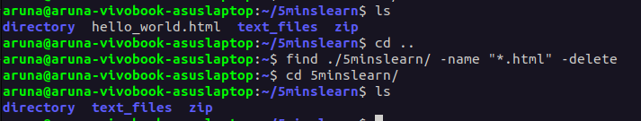
在上面的示例中，您可以看到 find 命令删除了扩展名为 .html 的文件
注意：此操作不可逆。运行删除操作时要 100% 确定。
我建议首先运行不带 -delete 标志的 find 命令，并确保只显示需要删除的文件。确定后，您可以执行附加 -delete 标志的相同命令。
在本文中，您学习了如何使用 Linux 终端有效地搜索文件。
这些是 find 命令中非常基本的选项，我认为每个开发人员都应该知道。我相信掌握基础知识是使用 Linux 变得更高级的第一步。我一直在我所有的博客中介绍基础知识，以帮助您打下坚实的基础。